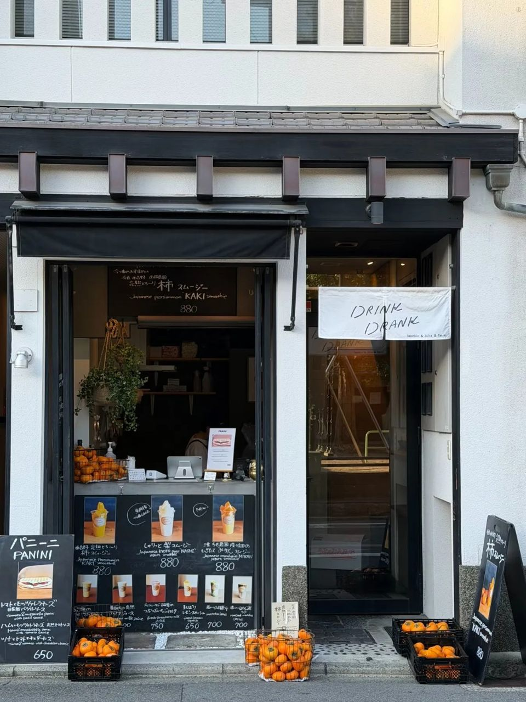
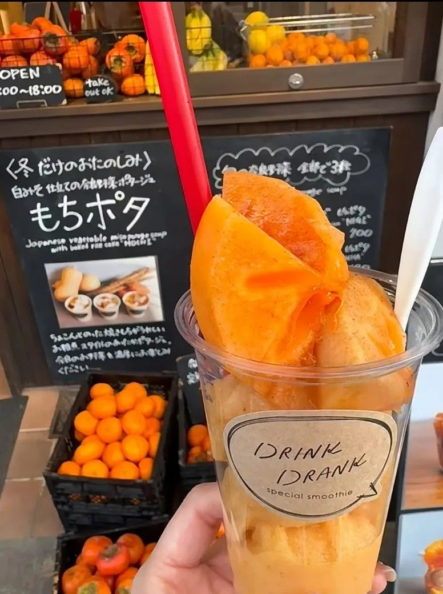
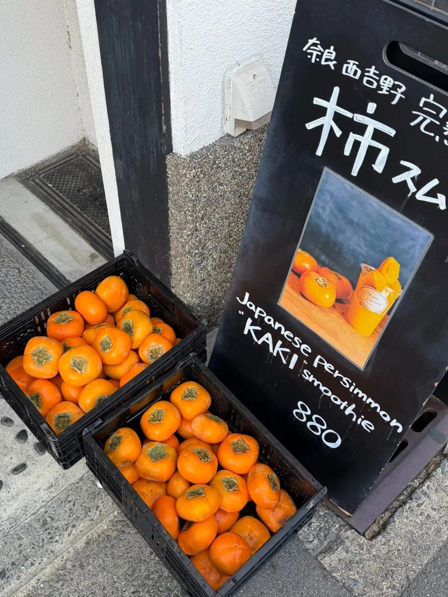
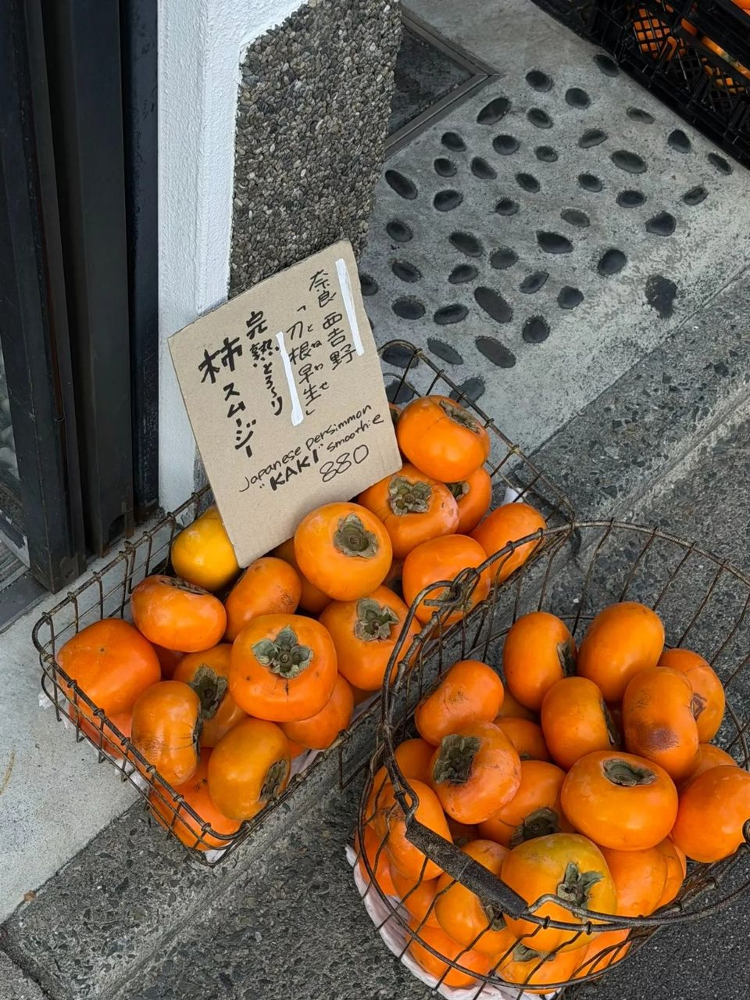

교토 니시키 시장 근처 DRINK DRANK, 가을 한정 감 스무디 후기
나라산 완숙 감을 갈고 위에 감을 큼직하게! 스무디는 너무 달지 않고, 올린 감은 아삭해요.
감으로 만든 음료, 드셔 보셨어요? 🍂
저는 이번이 처음이었는데요,
가을에 교토 가면
이거 하나면 될 것 같더라고요!
교토 롯카쿠도리 DRINK DRANK의
가을 한정 감 스무디, 지금부터 풀어볼게요!

1. 니시키 시장 근처, 롯카쿠도리!
- 위치: 일본 교토 롯카쿠도리 · 니시키 시장 근처 (아래 '가게 정보'에서 지도 보기)
- 영업: 11:00~18:00

2. 가을 한정! 나라산 완숙 감 스무디
나라산 완숙 감을 갈아서 만들고,
위에 감을 큼직하게 올려 줘요.
스무디는 너무 달지 않고,
위에 올린 감은 아삭해요.
비주얼도 예뻐서 사진이 잘 나와요 📸


3. 인기 메뉴는 품절 주의!
인기 메뉴는 늦게 가면
품절될 수 있어요.
4. 총평
- 추천: 가을에 교토 가는 분, 사진 예쁜 음료 찾는 분, 니시키 시장 구경하는 분
니시키 시장 구경하다가
가까우니까 꼭 한 번 들러 보세요!